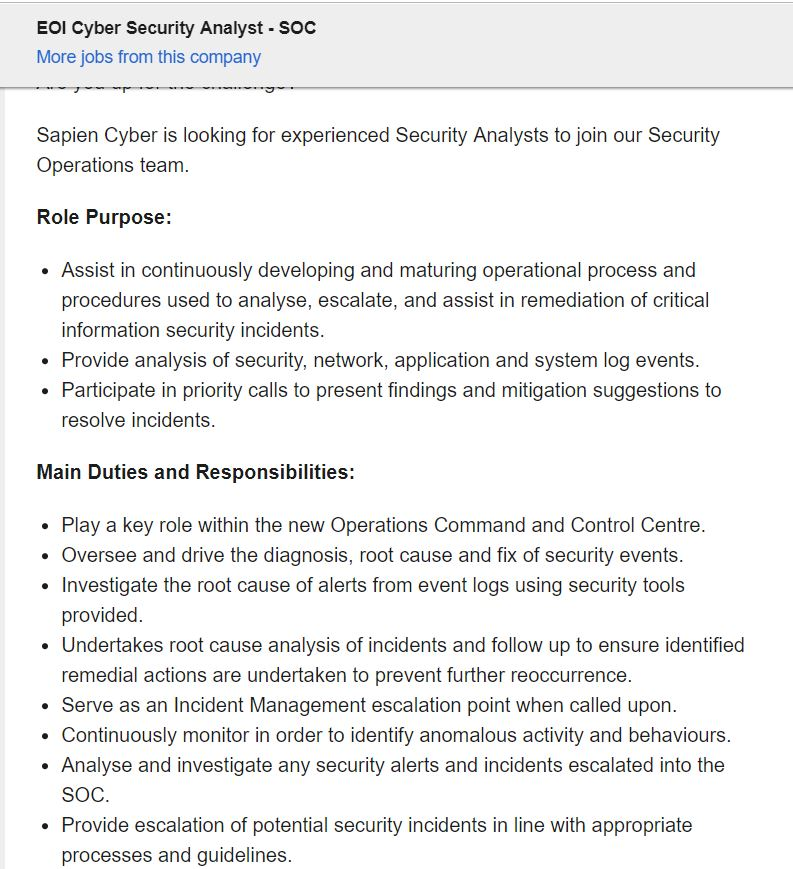

My Ideal IT Job
The role of Cyber Security Analysis at Sapien Cyber is a job that meets all the criteria I have for a future job. The position would have me help maintain security for a great many clients who prefer their data kept secure. This would entail regular testing of the security systems in place and the searching for vulnerabilities within the systems. I would have to work as part of a team to ensure that we keep on top of all possible breaches as well as any new technologies that enter the market that could either help or hinder current security protocols. This is a job that appeals to me as security is one of my main interests in the field of IT. I am also interested in Penetration Testing and this would most likely be one of the types of routine tests that would have to be performed as part of this job. I am passionate about data security and the protection of one’s data so this is a job that will play into this passion and allow me to explore all that this has to offer.
The skills necessary for a role such as this include the ability to detect incoming attacks, distinguish between malware, denial-of-service attacks, viruses and other such digital threats, as well as be able to deal with such incoming attacks, be able to work in a team environment, customer service skills would come in handy if I ever had to provide a consultation for a client, be able to find both physical and digital vulnerabilities within a company and help them improve on it, be able to advise clients on possible threats and fixes, and be able to communicate effectively with co-workers. The qualifications I would need at a bare minimum would be to complete a Bachelor of Information Technology, however a masters in cybersecurity would better my chances of landing a job such as this. A job such as this would often also require at least a couple years’ experience in a job in a similar field.
The current skills I posses that could come in handy in a job such as this are communication skills, customer service skills, a working knowledge of computers, I work well in a team and am also capable of working independently. I completed my VCE in 2016 and am currently studying a Bachelor of Information Technology. I have been working in a customer service position at the Dingley Hotel since 2017.
Completing the Bachelor of Information technology will provide me with most of the skills that I need to be able to perform effectively in this job. Any other skills that I am still missing I could pick up in a class or through research and further study. In my 2nd year of this degree I will apply for internships within security firms to give me some real-world experience that will help me procure entry level jobs once I leave uni. Once I have secured an entry level job, I will pick up any extra skills that I have missed through my studies and use this to help me gain a job such as the one highlighted above.